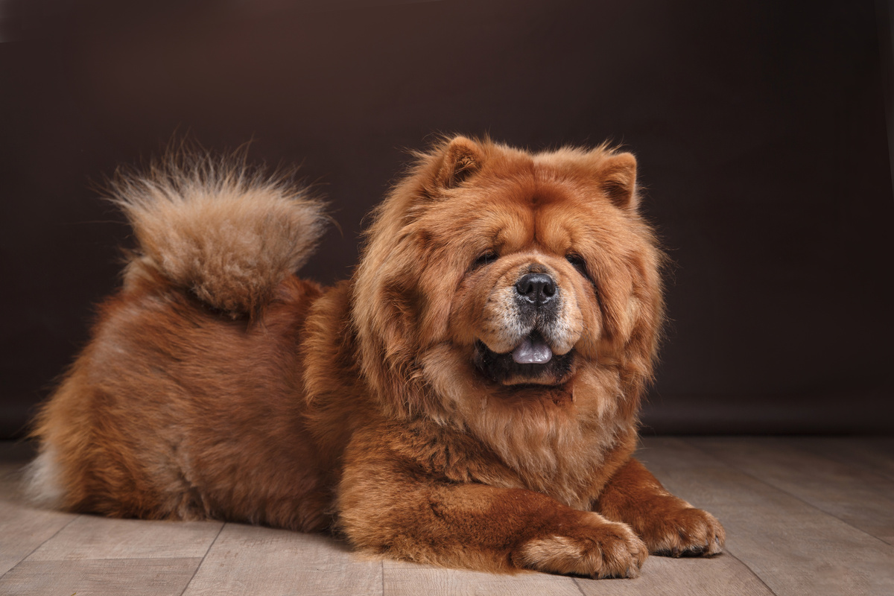
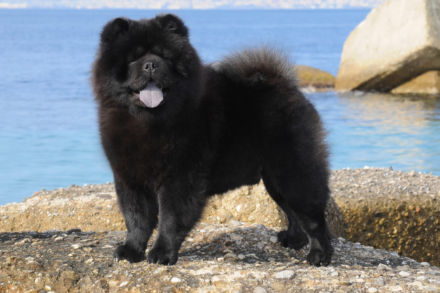

surgiu no norte da China há mais de dois mil anos, sendo uma das raças mais antigas do mundo.
O Chow Chow tem porte mediano,estrutura corporal forte e postura imponente. Possui uma cauda que geralmente fica dobrada para o alto e orelhas normalmente grandes e pontudas, mas que ficam disfarçadas pelo grande volume da pelagem.
Branco
Marrom
Preto